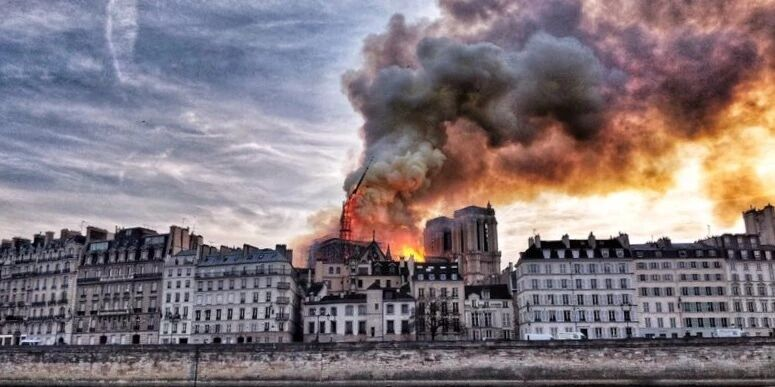

国宝级文物毁于一炬，木结构建筑如何防火？
以下文章来源于清华同衡规划播报 ，作者董雪妍等
专业视角的规划资讯传播平台

导
读
法国巴黎圣母院火灾反应出了木结构建筑施工维修中的防火安全问题。通过对该类建筑结构分析以及对相关规范的梳理，思考和总结文物古建筑和高层木建筑施工过程中防火安全，同时对未来该类建筑的建设施工、修缮维护提供一定的参考。
1
高层木建筑火灾
法国巴黎圣母院是联合国教科文组织确认的世界文化遗产，在当地时间2019年4月15日的火灾中，其支撑屋顶与塔尖的木结构被严重烧毁，正在进行的翻新工程中发生的电线短路可能是引发火灾的原因。

巴黎圣母院火灾前后对比（图片来源：中新网）
巴西国家博物馆是巴西最有历史意义的博物馆，2018年9月2日，发生火灾，馆内大量的木地板等木质建筑构造与储存标本的乙醇、甲醛等易燃化学物品导致火舌吞噬了几乎所有的房间，馆藏2000万件藏品毁于一旦。火灾原因是博物馆建筑年久失修，且缺乏消防系统。

巴西国家博物馆原貌（图片来源：你好网）

巴西国家博物馆大火之后（图片来源：Mauro Pimentel/AFP）
韩国崇礼门是首尔最古老的木建筑，被称作韩国“第一国宝”，2008年2月10日发生火灾，由于上层楼阁为木制建筑，火势迅速蔓延，并连同脊梁瓦片全部烧毁，仅下半部石砌部份仍保持完整。

崇礼门原貌（图片来源：环球网）

崇礼门在大火中突然崩塌（图片来源：法制晚报）
巴黎圣母院、巴西国家博物馆以及韩国崇礼门火灾事件，反应出了木结构建筑，特别是木结构文物古建筑火灾受损的严重性。
本文梳理相关规范及技术标准，对文物古建筑、高层木建筑的建设施工及修缮维护提供一定的参考。
2
木结构类型建筑易发生火灾、且难以救援
多高层木结构：大于三层的木结构与建筑。采用的木结构形式分为纯木结构、木混合结构。

应县木塔结构整体与局部效果图（图片来源于相关修复团队修复时为研究结构而做的模型）

巴黎圣母院结构图（图片来源：网络）
根据www.notredamedeparis.fr网站介绍，巴黎圣母院由于要建设哥特式的屋顶（角度达到55度），采用木结构来支撑其屋顶，其长度超过100m，中殿宽13m，横断面40m，高10m。塔尖使用了500吨木材，250吨铅，离地面93m。据CNN报道，“一旦木梁开始燃烧，石墙外部会不断升温，这使得建筑物外的消防员更难到达着火源。”美国圣路易斯消防局的前消防队员格雷格法夫尔说。清华大学土木水利学院陆新征教授表示，巴黎圣母院的大火是全人类文明的一个悲剧。木结构防火、抗火研究的必要性不言而喻，土木工程防灾减灾任重道远。

大教堂的天花板上的橡木横梁结构（图片来源：CNN）
3
教训与启示
1
文物古建筑、高层木建筑一旦发生火灾，耐火时间短，容易发生整体倒塌。有实验模拟数据火灾竖向形成“烟囱效应”，垂直蔓延速度极快。对于历史保护建筑，灭火人员难以进入建筑内部喷水灭火，一般也不会轻易从未着火部位开辟灭火通道，只能从外部采用高喷车喷水作业影响了灭火效率。
2
施工维修违规操作是文物建筑、木建筑发生火灾的一个常见原因。木结构建筑现场堆料复杂，可燃物多，维修施工的操作不规范容易导致火灾发生。根据国外经验，施工现场如果进行带电、明火等作业，施工过程中每人配备手持灭火器随时消灭起火点，施工完毕后60分钟内现场应有专人看管，4小时内应返回作业现场查看是否存在火灾隐患。
3
历史街区及历史建筑周边空间狭小也往往制约了火灾的扑救速度。巴黎圣母院大火持续5个多小时，虽然紧急调动了400余名消防员参与灭火，但是也很难同时派上灭火，一般采取消防车串联供水，多台消防车轮流作业。
4
文物古建筑、木建筑的要采取消防、人防、技防多管齐下的措施。既有的古建筑安全仍然坚持预防为主，重视监控与第一时间扑救；同时完善消防设备设施，补充建筑周边的消防栓与取水口；消防车通道应设置环状道路，满足消防装备安全、快捷通行要求。
相关规范及技术标准
《多高层木结构建筑技术标准（GB/T 51226-2017）》：
7.4.1施工现场应设置灭火器、临时消防给水系统和应急照明等临时消防设施，并应符合现行国家标准《建设工程施工现场消防安全技术规范》GB 50 720的规定。灭火器的设置应符合现行国家标准《建筑灭火器配置设计规范》GB 50140的规定。
7.4.2临时消防设施应与在建工程的施工同步设置，并应与在建工程主体结构施工进度相同。
7.4.3施工现场或其附近应设置消防水源和加压设施，并应满足施工现场临时消防用水的水压和水量要求。
7.4.4建筑高度大于15m的木结构工程，应设置临时室内消防给水系统。
7.4.7施工现场动火作业应实行动火许可证制度，动火现场应配置专人监护。动火作业后1h内应对现场进行监护；动火作业4h后，应再检查一次现场，并应在确认无火灾危险后离开。
7.4.8焊接、切割、烘烤或加热等动火作业前，应对作业现场及其附近无法移走的可燃物采用不燃材料进行覆盖或隔离。
7.4.9构件加工和施工产生的可燃、易燃建筑垃圾或余料，应及时清运。
《木结构通用规范》：
5.4.1木结构施工现场堆放木材、木构件、木制品及其他易燃材料应远离火源，存放地点应在火源的上风向。施工现场严禁明火操作，当进行现场施焊等操作时应做好保护措施；焊接作业完毕后60min内现场应有专人看管，2h内应返回现场查看。
（本条规定源自加拿大BC省的防火规范规定，施工现场如果进行电焊等作业，应做好相应保护措施，且作业完毕后60min内现场应有专人看管。作业完毕后4h内应返回作业现场查查看是否存在火灾隐患。在实际操作中，施工人员42发现焊接作业后如果存在火灾隐患，一般在3h左右就会引发火灾，所以在实际操作中要求焊接作业完毕后2h内返回现场查看。）
《建筑防火通用规范》：
2.4.3焊接、切割、烘烤或加热等动火作业前，应清理作业现场的可燃物；作业现场及其附近不能移走的可燃物，应具有防火保护措施；不得直接在裸露的可燃材料上进行动火作业。
《文物建筑修缮工程施工控制规范（DB11T 1327-2016）》：
5.2.2施工现场使用的安全网应采用符合国家标准的阻燃型密目网，与主体应绑扎牢固。
5.2.16施工现场不用使用明火，必须使用明火时，应按照有关规定履行报批手续。
作 者：
董雪妍、黄勇超、吕悰、于开春、陆新征、万汉斌、霍晓卫
合作编写：
清华同衡规划设计研究院公共安全研究所、清华同衡规划设计研究院遗产研究中心、清华大学土木水利学院防灾减灾研究所
文中图片仅作思考交流使用，侵删